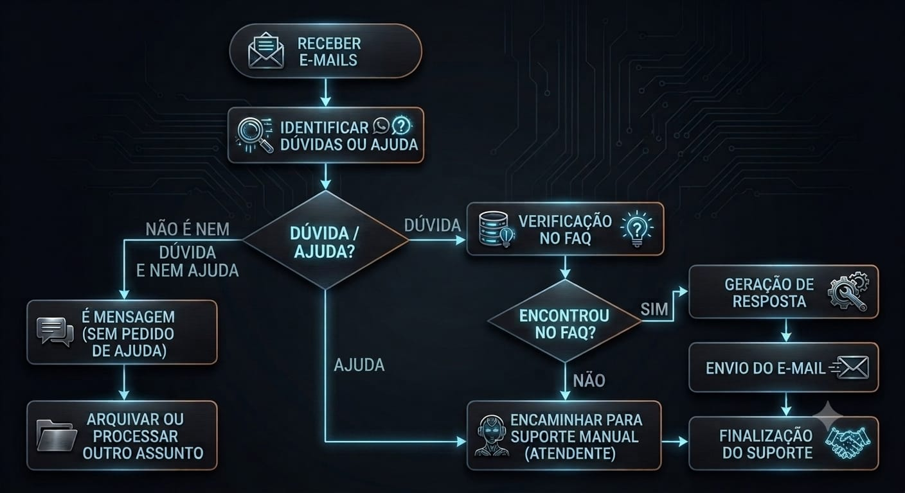

1. Gatilho e entrada de dados
Receber e-mails: o fluxo é iniciado automaticamente assim que uma nova mensagem chega na caixa de entrada corporativa do Outlook.
2. Tratamento técnico do conteúdo
Conversor HTML para texto: o corpo do e-mail recebido passa por um processo que remove as tags HTML e extrai apenas o texto puro, deixando o conteúdo pronto para análise.
3. Triagem com IA (Grok)
Interpretação da intenção: o texto extraído é enviado ao modelo Grok, que analisa a mensagem e classifica em três caminhos:
- Informativo: comunicado, aviso ou agradecimento sem demanda técnica.
- Ajuda / dúvida: solicitação recorrente ou assunto com resposta rápida.
- Suporte presencial / nível 2: problema crítico ou demanda técnica direta do time de TI.
4. Rotas e execução das ações
Rota 1: Informativo
Ação no Outlook: a mensagem é movida para uma pasta específica de arquivo ou processamento encerrado.
Fim do fluxo: o ciclo da mensagem é finalizado.
Rota 2: Necessidade de presença / TI direto
Ação no Outlook: e-mails categorizados como críticos são encaminhados para a caixa de entrada do time de suporte de TI para atendimento manual.
Rota 3: Consulta de FAQ (ajuda)
Integração via tools: a IA consulta uma base de conhecimento em planilha de FAQ.
Verificação no FAQ: o Grok avalia se a dúvida corresponde a uma solução cadastrada.
Se SIM: o sistema gera uma resposta automática, envia ao usuário e encerra o fluxo.
Se NÃO: a mensagem é encaminhada para a equipe humana do suporte de TI.
Fluxograma

Agradecimento
Obrigado pela atenção!
Agradecemos pela atenção e pelo interesse em conhecer o projeto de Automação de Triagem de E-mails Corporativos.
Esperamos que a apresentação tenha demonstrado de forma clara como a automação e a inteligência artificial podem contribuir para organizar as solicitações, responder dúvidas frequentes e direcionar corretamente os casos que necessitam de suporte técnico.
O projeto busca tornar o processo de atendimento mais ágil, organizado e eficiente, permitindo que cada mensagem siga o fluxo adequado de acordo com sua necessidade.
Obrigado pela atenção e pela participação!